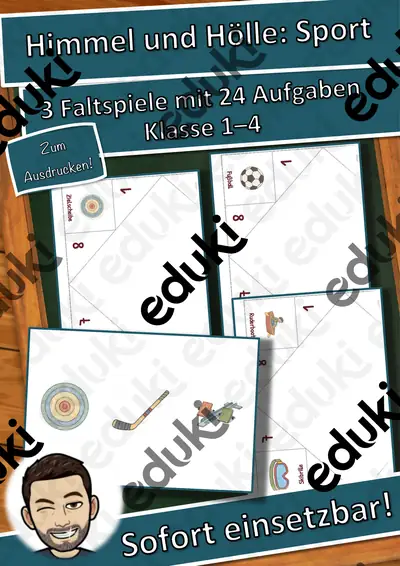
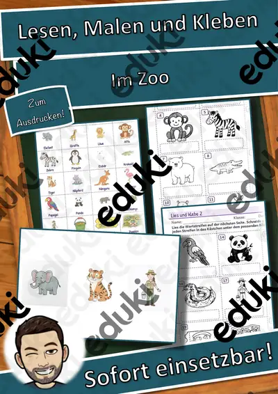
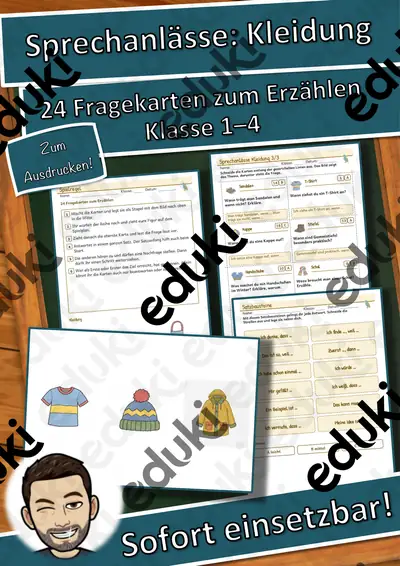
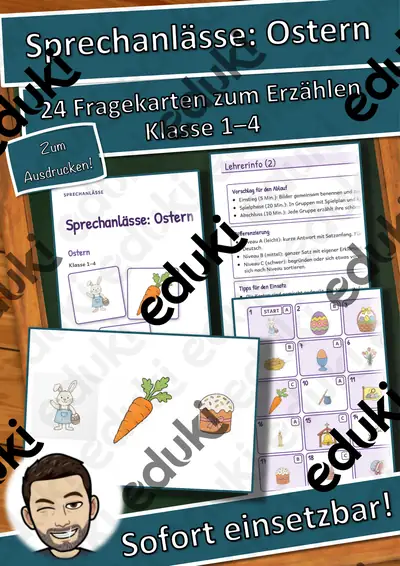
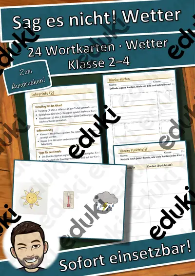

Wort-Bild-Karten: Im Zoo – Wort-Bild-Karten – Klasse 1–4
24 Bildkarten zum Thema Im Zoo: Jede Karte zeigt ein gezeichnetes Bild mit dem passenden Wort. Dazu gibt es die Wortkarten zum Zuordnen, zwei Schreibseiten zum Abschreiben und Aufschreiben, ein Wörterbuch mit dem Wort in fünf Sprachen und eine Lösungsseite.
Einsatz im Unterricht: Wortschatzarbeit, Rechtschreibung, Freiarbeit, Stationenarbeit, Vertretungsstunde und Sprachförderung. Die Vorbereitung ist genau beschrieben (Menge, Seiten, Farbe, Laminieren, Schneiden, Zeit). Alle Bilder sind eigene Zeichnungen.
Texte KI-gestützt und von mir geprüft. Die Bilder sind eigene KI-gestützte Zeichnungen (keine Fotos). Bildquelle: eigene Darstellung.
Enthalten (15 Seiten): Spielideen · Bildkarten · Wortkarten · Schreibseite · Wörterbuch · Lösung
Ähnliche Materialien

Ich habe, wer hat? Am Meer – Lese-Schleifen – Klasse 1–4

Wortspiele: Sag es nicht! Am Meer – Klasse 2–4

Himmel und Hölle: Sport – Himmel und Hölle – Klasse 1–4

Lesen, Malen und Kleben: Im Zoo – Lesen und Malen – Klasse 1–4

Sprechanlässe: Kleidung – Sprechanlässe – Klasse 1–4

Sprechanlässe: Ostern – Sprechanlässe – Klasse 1–4

Ich habe, wer hat? Wetter – Lese-Schleifen – Klasse 1–4
